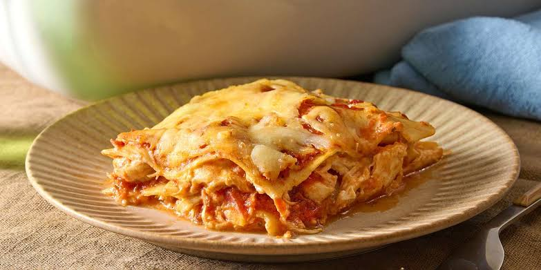

Creamy Chicken Lasagna Recipe

Home
Description
This is an easy lasagna recipe featuring jarred spaghetti sauce for easy layering and rich tomato flavour. Reviewers love using cream cheese instead of ricotta for a rich,creamy texture
Ingredients
- 6 uncooked lasagna noodles
- 3 skinless, boneless chicken breast halves
- 2 cups shredded mozzarella cheese, divided
- 1 (8 ounce) package cream cheese, softened
- 1/4 cup hot water
- 1 cube chicken bouillon
- 1 (26 ounce) jar spaghetti sauce
Steps
- Gather all ingredients. Preheat the oven to 350 degrees F (175 degrees C)
- Bring a large pot of lightly salted water to a boil. Cook lasagna nooldes in boiling water, stirring ocassionally, until tender yet firm to the bite, about 8 minutes. Dran, rinse wit hcold water, and set aside.
- Meanwhile, place chicken in a large suacepan with enoug hwater to cover; bring to a boil. Cook until chicken is no longer pink and juices run clear, about 20 minutes. Remove chiken from the saucepan and shred.
- Combine shredded chicken, 1 cup mozarella cheese, and cream cheese in a large bowl. Dissolve hot water and bouillon in a liquid measure; pour over chicken mixture and stir until well combined
- Spread 1/3 of the spaghetti sauce in the bottom of a 9x13-inch baking dish. Cover with 1/2 of the chicken mixture and top with 3 lasagna noodles; repeat. Top with remaining sauce and sprinkle with remaining 1 cup mozarella cheese.
- Bake in the preheated oven for 45 minutes.
- Serve and enjoy!